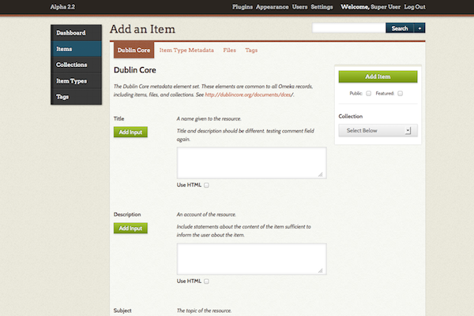
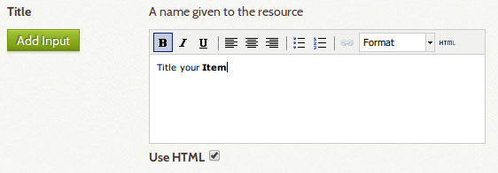
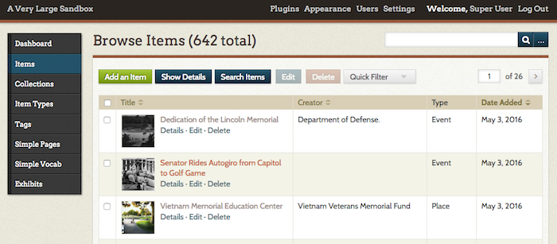
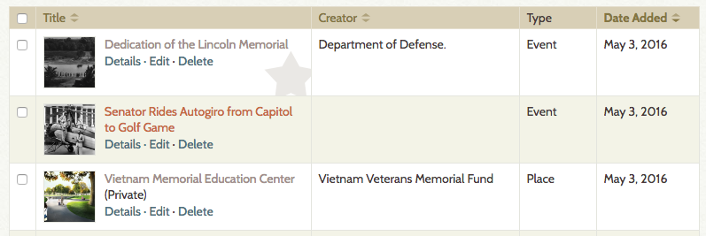
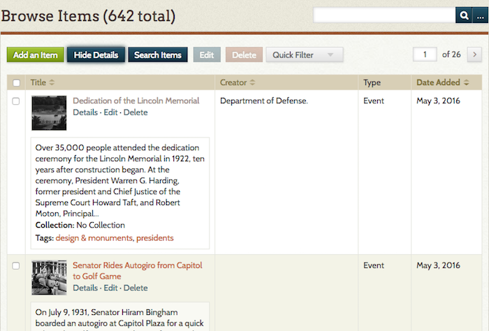
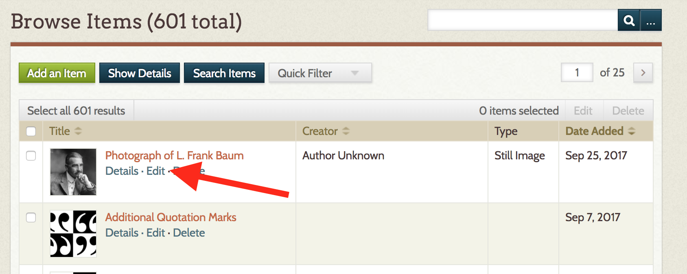
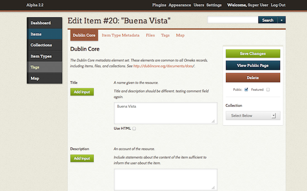
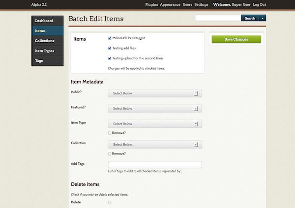

Items
Items are building blocks in Omeka Classic. To build your digital collections website, you must first add items.
Before Adding Items
You may want to consult the Site Planning Tips page to think about how to build your site and what you want to do with your items.
You may also want to think about what type of information you plan to share using the Dublin Core Metadata fields before adding and describing items. You may also want to read the Working with Dublin Core page for a brief explanation of using metadata in Omeka Items.
Add an Item

From your items page (mywebsite.org/admin/items) click the "Add an Item" button.
This takes you to the admin/items/add page where you see a navigation bar across the top pointing you to different stages of adding an item.
- The first tab shows the Dublin Core metadata fields. These are available for every item in the archive.
- Each field can have multiple values; Simply click the "Add Input" button beside each field title to add a new input for that field.
- You can use HTML in these elements if you want; see below for more information.
- The Item Type Metadata tab lets you choose a specific item type for the object you are adding.
- Once you choose the type by using the drop-down menu, relevant metadata fields appear for you to complete.
- See Item Types for information about adding/editing item types.)
- The Files tab lets you upload files to an item.
- Clicking the "Add Another File" link will reveal another field for adding a file. You can associate any number of files to an item. Read more about Files.
- The Tags tab allows you add keyword tags to your item.
- You must press the “Add Tags” button in order to attach tags to an item. Simple entering them in the Add Tags field will not work.
- To assign items to a collection: on the right side of the page, under the "Add Item" button is a drop-down menu where you can assign your item to a collection. Remember, items can only belong to one collection.
- At any time, you may check the “Public” and/or “Featured” boxes to the right of the item form, just under the button for Add Item.
- Be sure to click the "Add Item" button to save your data.
Using HTML in Item Elements
Each metadata field's text may be enhanced using basic HMTL tags. Check the HTML box below the text box to enable a visual HTML editor. 
For more information about working with the HTML editor, please see Using HTML Editor-TinyMCE
Properties of Items
Items: Each item contains Dublin Core and Item Type metadata; an item can belong to one collection at a time, and have an infinite number of tags. Items may contain many or no files.
Collections: May be comprised of different items. Items may only belong to one collection a time.
Tags: Tags can be added to any item, and an item may contain an infinite number of tags.
Browse Items in Admin
Clicking on the Items tab from the Dashboard or /admin page takes you to a list of items. By default, these are sorted with most-recently added at the top.

The browse items view displays items in a table. Each row is an item. There are columns for a checkbox (to select items for bulk actions), the item title, item creator, item type, and the date added.
Click the paired up-down arrows next to the Title, Creator, and Date Added headers to sort the items by that field.
Note that Items that are not public will display (Private) next to the title, Items that are featured have a star inside the item’s title. The image below shows first a featured item (note the star), then a general public item, then a private item.

Each item has buttons to view Details, Edit, or Delete just below its title.
To view the details of all items, click the Show Details button above the table of items. This will show the first few lines of the item’s Description as well as any associated tags.

To search all items, click the Search Items button which takes you to an advanced item search page.
Edit an Item
You can edit any of the information you entered when creating an item, or add new information, by going to the Items tab on the left hand navigation.
On the admin Browse Items page, items are displayed with limited metadata, including the Title, Creator, Item Type, and Date Created. To see additional metadata associated with that item, use the Details link under the item's title. You may also use the blue Show Details tab, which will display details for every item on the page.
Find the item you want to edit in the list and click the Edit button below its title.

This opens an expanded edit page where you may make your edits.
Editing options are the same tabs as when you added the item. You can add new text, tags, files, and mapping or change exiting content.

Make sure you click the "Save Changes" button so you don't lose your changes.
Delete an Item
To delete one item, you may delete that item by clicking the Delete link found below the title on the admin/items page. You will be asked to confirm this action.
You may also delete an item by editing the item, and clicking the "Delete" button, found to the right of the page under the link to View Public Page.
Batch Editing & Deleting
- Click Items tab from the Dashboard or admin screen (admin/items).
- Find items that you wish to edit or delete in a batch by browsing, sorting, or searching.
- Use the check boxes to the left of an item's title to select it for batch editing, or select the box to the left of the Title heading to select all items available on that page.
- Once items are checked, click the the Edit button; the items will open in an editing page where you may make changes.

-
You may make the following changes for each batch of selected items:
- make public or private,
- feature or not featured,
- change Item Type,
- switch or associate selected items with a Collection,
- add Tags to all selected items,
- delete Items,
- include Item Relations, if the Item Relations plugin is installed.
-
Check the list of items to be edited or deleted in the box to the right. Un-check box to the left of items if you marked one by mistake.
- Click Save Changes to edit all of the selected items.
Output Formats
Once you have items in an archive, item data may be shared in a variety of Output Formats.